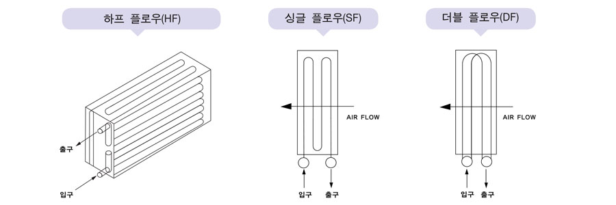
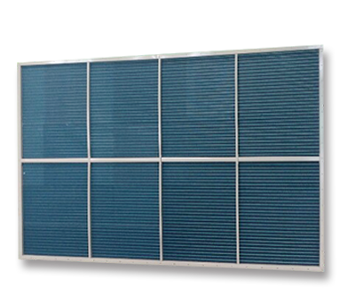
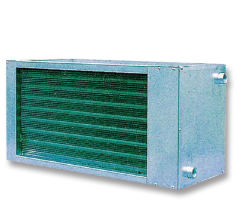

코일
CROSS FIN COIL의 선정
| COIL의 정면통과 풍속 | COIL의 정면통과 풍속은 냉각 COIL의 경우 2~3m/s의 범위 내에서 사용하여 주시기 바랍니다. 3m/s 이상이 될 때에는 냉각 COIL 뒤에 엘리미네이터를 설치하여 주시기 바랍니다. 가열 COIL은 4m/s 이내로 선정하여 주십시오. |
|---|---|
| 냉매의 증발온도 | 냉매의 증발온도가 낮아지면 냉각 COIL의 능력은 증가하나 냉동기의 효율이 낮아 동력비가 증가합니다. 반대로 증발온도가 높아지면 동력비는 절감되나 COIL의 전열 면적을 크게 선정하여야 합니다. 따라서 증발온도는 경제적인 면을 고려하여 선정하시고, 증발온도가 낮을 때에는 FIN의 표면에 결로가 발생하므로 이에 대한 방안도 고려하여 주십시오. |
| 냉매와 공기의 흐름방향 | COIL의 효율을 높이기 위해서는 냉매 또는 열매와 공기와의 흐름을 대향류(COUNTER FLOW)가 되도록 설정하여 주십시오. |
| 필요 유량의 선정 | 냉온수 COIL에서 관내의 유속은 0.8~1.2m/s가 배관 및 펌프 설비비는 물론 COIL의 효율에도 좋습니다. 필요유량을 COIL의 단수로 나누어 유속을 확인하여 HEADER의 형상을 하프 플로우(H.F), 싱글 플로우(S.F), 더블 플로우(D.F) 중에서 선정하여 주십시오. |
| COIL 용량의 여유 | COIL의 냉각 및 가열의 부하에 따라서 COIL의 열수 결정과 선정된 소요열수(ROW)에 1열은 50%, 2열은 30%, 4열 이상은 20% 이상의 여유를 더한 것이 최종 소요 열수가 됩니다. |
| 냉온수코일 헤더의 서킷 선정 | 냉온수 COIL의 HEADER는 통과 유체의 유속에 따라 다음 3가지 CIRCUIT를 사용할 수 있습니다.  |


